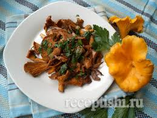
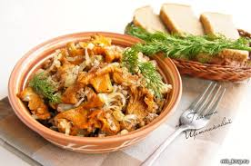

КАША ГРЕЧНЕВАЯ С ЛИСИЧКАМИ
здесь просто нужен какой-то текст для проверки работоспособности страницы

на 2 порции:
- крупа гречневая 1 стакан
- грибы лисички 300грамм
- масло растительное 2 ст. ложки
- лук репчатый 1 головка
- вода 2.5 стакана
- пюре томатное 2 ч. ложки
- перец черный молотый
- соль
- Крупу залейте двумя стаканами горячей воды, посолите и сварите рассыпчатую гречневую кашу
- Грибы нарежте ломтиками и обжарте на масле с добавлением нашинкованного кольцами лука, посолите, поперчите, влейте немного воды и тушите до готовности. в конце приготовления введите томатное пюре.
- Готовую кашу выложите на блюдо, сверх уложите тушеные грибы и зелень.